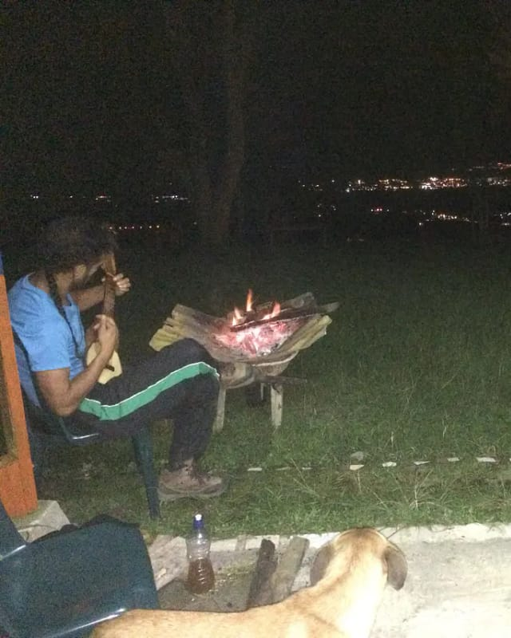
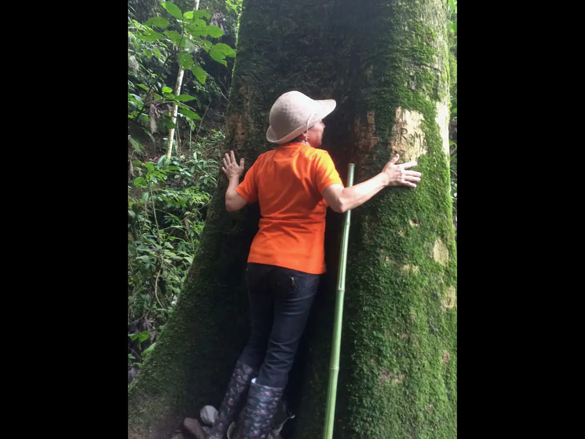

✈️ Pereira Airport
~1h 40min by car
The easiest gateway to Colombia's Coffee Region. Daily flights from Bogotá, Medellín, Cali and Miami.
International arrivalEcoparque Peñas Blancas is a natural reserve in Calarcá where rock, cloud forest and the legend of Cacique Calarcá meet. Rock climbing, rappelling, caving, hiking and camping at 2,430 m above sea level — right in the heart of Colombia's Coffee Region.
 Central Andes
Central Andes
Calarcá is well connected. If you're already heading to Salento, Cocora Valley or Pereira, adding a day at Peñas Blancas is a no-brainer.
The easiest gateway to Colombia's Coffee Region. Daily flights from Bogotá, Medellín, Cali and Miami.
International arrivalIf you're already in Salento, a half-day at Peñas Blancas fits perfectly into your coffee-country itinerary.
Perfect day-tripCapital of Quindío. Take a Willys jeep from the Calarcá Plaza de Mercado up to La Virginia.
Closest hubA weekend in the Coffee Region with Peñas Blancas is more than worth the trip. Book in advance.
Weekend escapeA drone view of the trail, the cliffs, and the 360° vista over Quindío.

📹 Video by Mosquera Music · Watch on YouTube

Forest
Cloud forest
Rock
280 m walls
Summit
2,430 m a.s.l.In La Virginia village, above Calarcá, the white cliffs rise like a natural balcony over Quindío. The Ecopark protects this ancestral mountain — home to the legend of Cacique Calarcá and to the Quimbaya and Pijao cultures.
Here, adventure goes hand in hand with conservation: every visit supports a forest where we have already planted more than 20,000 trees.
From a peaceful forest walk to a full day of climbing and rappelling on 80-meter walls.
Natural rock walls up to 280 meters, fully vertical. Routes for beginners and advanced climbers, with instructor and certified gear.
Adventure · UIAADescend walls of up to 80 meters under international standards. A safe, controlled experience — no prior experience required.
Adventure · UIAAExplore deep caves following the steps of the Cacique Calarcá legend. An expedition into the wet, silent heart of the mountain.
Adventure · CultureA 3.2 km route through native forest, viewpoints and reforested areas. Ideal for families, couples and birdwatchers.
NatureThe Quindío cloud forest hosts dozens of bird species. Bring your binoculars — toucans, hummingbirds and raptors await.
Nature · BirdingA 40-meter mini zip line above the forest. Perfect for children and anyone wanting a taste of adrenaline without the height.
FamilySoccer (8-a-side), volleyball, children's games and observation-sport tracks. Open-air spaces to enjoy with a group.
Groups · FamilyWorkshops and guided tours for schools and groups: reforestation, Quindío wildlife and Quimbaya/Pijao culture.
Schools · GroupsTrail entry is very affordable. Adventure activities and lodging are quoted per group — message us and we'll build your perfect plan.
Ecological trail
Climbing · Rappel · Caving
Spend the night in the mountain
💬 For current rates, message us on WhatsApp or call +57 310 396 7951 · +57 300 658 7163.
The mountain at night is something else. Wake up with the sound of birds and the smell of the wet forest.

A spacious, cozy cabin — perfect for groups, families or a quiet retreat. Sleeps up to 10 people.

Wide space with platforms, drainage, shared kitchen and sanitary facilities. Privacy and silence deep in nature.

Traditional Quindío cuisine with fresh local ingredients. Typical lunches, sugarcane juice and locally grown coffee.
"Before the Spanish conquerors arrived, the Cacique Calarcá hid his people's gold in the caves and white cliffs of the mountain. Whoever walks these rocks today walks through the history of the Pijao and Quimbaya peoples."
— Oral tradition of Quindío
A small glimpse of the landscape waiting for you. For real photos from the park, follow us on @ecoparquepenasblancas.

penas-07.jpg" alt="Cloud forest with mist among the trees" loading="lazy" decoding="async" width="600" height="600">


The park receives visitors Wednesday through Monday during daylight hours. We recommend arriving early to enjoy the best forest light.
For climbing, rappel and caving, please book in advance so we can coordinate guides and gear.
💡 The best window for photos at the cliffs and quiet hikes is 9:00 AM – 11:30 AM.
La Virginia village, 30–40 minutes from Calarcá's town center. Right in the heart of the Coffee Region, a short drive from Armenia, Salento and Filandia.
Calarcá, Quindío · Colombia. 2,430 m above sea level on the Central Andes, in the Coffee Cultural Landscape.
Open in Google MapsApproximate distances
Visitors from
Everything you need to know before heading up to the ecopark.
Trail entry costs from COP $7,000 per person and includes a drink. Adventure activities (climbing, rappel, caving, zip line) and lodging are quoted separately on WhatsApp.
In La Virginia village, Calarcá municipality, Quindío. It's about 30–40 minutes from Calarcá town on a mountain road.
Take a Jeep Willys at the Calarcá Plaza de Mercado to the ecopark. An express ride to the parking area costs around COP $30,000. We can also help arrange transport.
No. We work with instructors and all gear meets the international UIAA standard. We welcome beginners, families and groups. Some activities have health, weight or age limits — we confirm them with the guide.
Closed shoes with good grip, long comfortable clothing, hydration, insect repellent, sunscreen, a change of clothes and a light jacket. Temperatures are 12–20 °C (54–68 °F). For camping, bring a tent and sleeping bag.
Yes. Kids must come with a responsible adult; some activities require a civil registration. Pets are welcome with a leash and current vaccination record.
Yes — a restaurant with Quindío cuisine (by reservation), a cabin sleeping up to 10, and a camping area with shared kitchen, bathrooms and showers.
For guided visits and adventure activities, regular hours are Wednesday to Monday, 9:00 AM to 3:00 PM. We always recommend confirming availability on WhatsApp before heading up.
The ecopark is a reserve: no smoking, no alcohol or other substances, no weapons, and pack out all the trash you bring in. We've been planting forest for years — help us protect it.
Quimbaya and Pijao tradition tells that Cacique Calarcá hid his people's treasure inside the caves and white cliffs of the mountain before the Spanish conquerors arrived. Walking the caves today is like stepping into that ancestral story.
Message us on WhatsApp to book a visit, arrange adventure activities, lodging, or a tailored plan for your group.
Up to the mountain in 4 steps
The park sits in La Virginia, about 30–40 minutes from Calarcá town. It's a mountain road — go slow, you'll get there.
Get to Calarcá
Calarcá is 10 minutes from Armenia. By bus, get off at the Calarcá terminal and head to the Plaza de Mercado (market square).
Take a Willys jeep to La Virginia
From the Calarcá Plaza de Mercado, take a Jeep Willys to the ecopark. An express ride to the parking area costs around COP $30,000.
Coordinate your visit
Before heading up, message us on WhatsApp to confirm guide, gear or lodging. Cell signal in the mountain is limited.
Pack what you need
Closed shoes, long pants, hydration, repellent, sunscreen and a light jacket. Temperatures range 12–20 °C (54–68 °F).